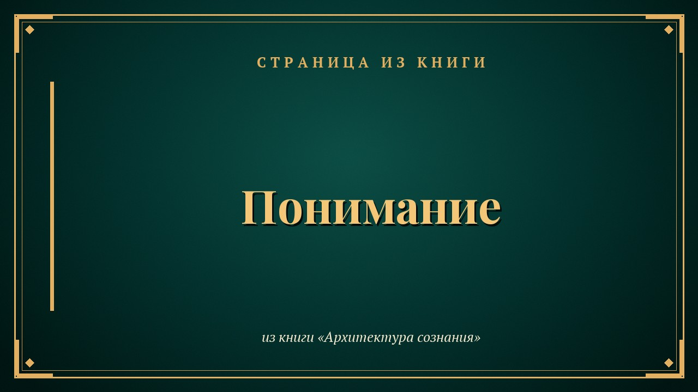

Пост 1 · Пн 2 ноября, 12:00 · Страница из книги
Понимание
Страница из книги «Архитектура сознания»
Понимание — способность духовного существа проникать в суть информации, явлений и процессов. Оно возникает не само по себе, а как естественное следствие предыдущих инициаций. Понимание соединяет отдельные сведения в единое целое, превращая набор фактов в осмысленный опыт. Это не просто знание деталей — это способность видеть, как они связаны между собой и как вместе формируют общую картину.
Когда Вы в последний раз «увидели картину целиком» там, где раньше видели только детали?
Бесплатный фрагмент книги: http://irektuhvatshin.ru/fragment.html